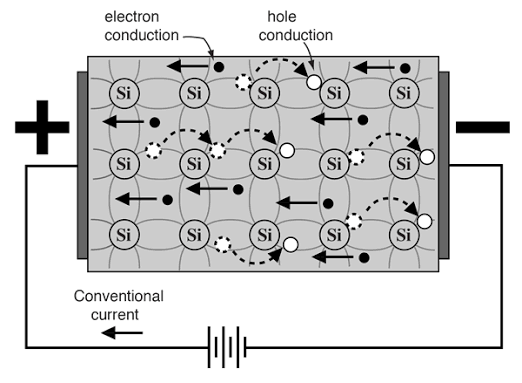

Intrinsic Semiconductors
These are pure materials, such as Silicon (Si) or Germanium (Ge)[cite: 11]. In these materials, the Fermi level lies perfectly between the conduction and valence bands[cite: 11].
When thermal energy causes an electron to jump into the conduction band, it leaves behind an empty space in the valence band known as a hole[cite: 11]. This hole acts as a positive charge (+1.6 × 1019 C)[cite: 11]. In intrinsic semiconductors, current flows due to the motion of both the free electrons and these positive holes (n = p)[cite: 11].

Extrinsic (Doped) Semiconductors
Intrinsic semiconductors have relatively low conductivity because they lack sufficient charge carriers. To fix this, engineers introduce specific impurities into the material, a process known as doping[cite: 11].
- n-type Semiconductors: Created by adding Group VA elements (like Phosphorus) which have a higher valence[cite: 11]. This introduces extra free electrons into the lattice. Because electrons are the vast majority (n >>>> p), conductivity is almost entirely dictated by electrons[cite: 11].
- p-type Semiconductors: Created by adding Group IIIA elements (like Boron) which have a lower valence[cite: 11]. This creates a deficiency of electrons, resulting in extra holes. Here, holes are the vast majority (p >>>> n), so conductivity is dictated by hole movement[cite: 11].
Practice Exercises
Test your knowledge on Intrinsic and Extrinsic Semiconductors.
1. In an intrinsic (pure) semiconductor like Silicon, how does the number of free electrons (n) compare to the number of holes (p)?
A) n is vastly greater than p
B) n is perfectly equal to p
C) p is vastly greater than n
2. What defines a "hole" in semiconductor physics?
A) A physical gap between two atoms in the lattice
B) An extra neutron in the nucleus
C) An empty space left in the valence band when an electron jumps to the conduction band
3. How is an n-type semiconductor created?
A) By doping with Group VA elements (like Phosphorus) to create extra free electrons
B) By doping with Group IIIA elements (like Boron) to create extra holes
C) By freezing the semiconductor to 0 Kelvin
4. What is the majority charge carrier in a p-type semiconductor?
A) Free electrons
B) Holes
C) Protons
5. What is the primary purpose of "doping" a semiconductor?
A) To make it physically harder
B) To generate excess charge carriers, greatly increasing its electrical conductivity
C) To increase its band gap to turn it into a perfect insulator